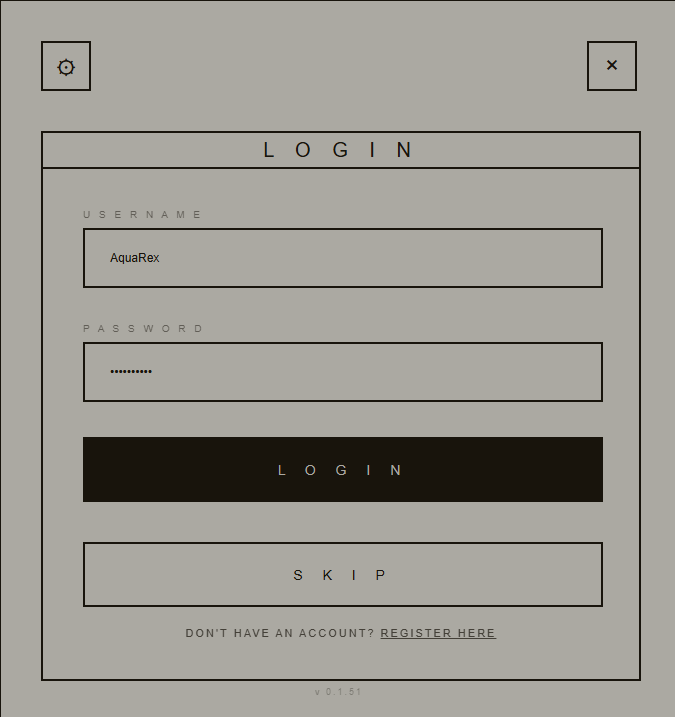

STAR CITIZEN TRACKER
COMBAT ANALYTICS FOR STAR CITIZEN
A .NET Application using HTML for frontend and a C# backend, that tracks player statistics in-game and uploads the data in real-time to an SQL database. The website provides a user-friendly, realtime analytics dashboard for players to view their performance and statistics directly from the database using secure Web Service APIs. The .NET application provides, like the website, a login interface that verifies users securely using encrypted credentials, ensuring data privacy and security.
The design of the .NET App and Website was designed as modern minimalism with the principle of 3 colors for the entire website, where the colors could flip to allow darkmode viewing, reveal hovered interaction states, intent and contrast.
The design of the .NET App and Website was designed as modern minimalism with the principle of 3 colors for the entire website, where the colors could flip to allow darkmode viewing, reveal hovered interaction states, intent and contrast.

Authentication System
Secure user authentication and account management system that enables personalized tracking and community features. Users can create accounts, manage their profiles, and control privacy settings for their combat statistics and leaderboard participation.
- Secure user registration and login
- Profile customization options
- Privacy control settings
- Account verification system
- Password recovery functionality
- Social features and community integration
Analytics Dashboard
The web platform transforms raw data into comprehensive analytics and visualizations. Players can explore their performance and detailed breakdowns of their combat encounters, view leaderboards and compare their stats with other players in the community.
- Visualizes database data in an interactive user-friendly interface
- Kill / Death tracking and analysis
- Weapon effectiveness analysis
- Zone-based performance metrics
- Historical trend tracking
- Advanced filtering and search functionality
Database Management
Advanced SQL database editor and management interface for administrators and power users. Provides direct access to the underlying data structures, enabling complex queries, data analysis, and system administration tasks with a professional-grade interface directly from the website.
- SQL query execution and direct editing
- Full insight into users and all tracked data
- Full insights into admin actions
- User Administration and verification
- User permission management
- Backup and recovery operations
READY TO TRACK YOUR PERFORMANCE?
Join the community of Star Citizen players who are already using Star Citizen Tracker to improve their combat performance and compete on the leaderboards. Download the desktop application and start tracking your journey through the verse.